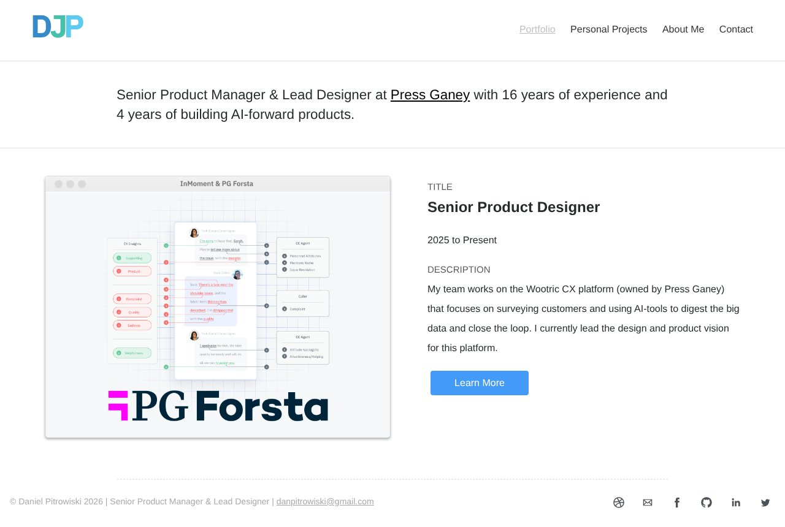
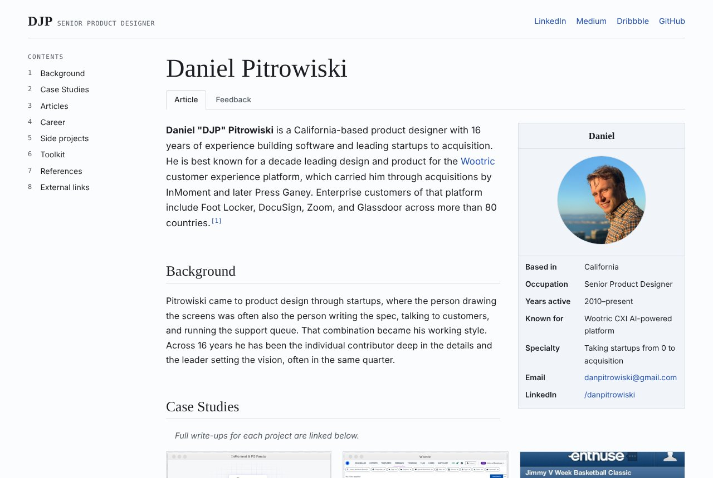
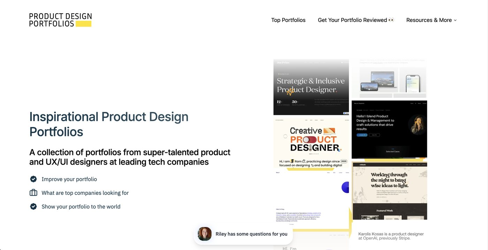
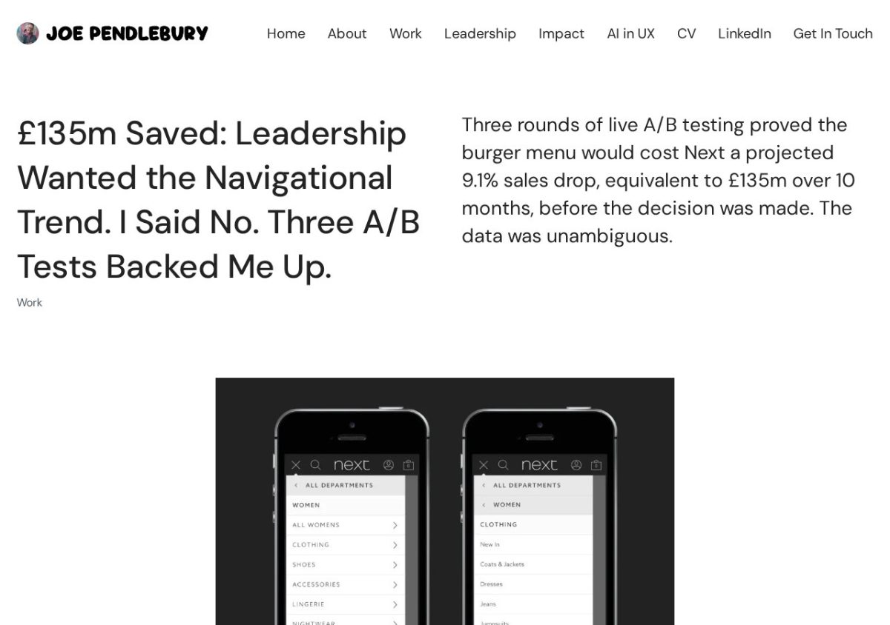
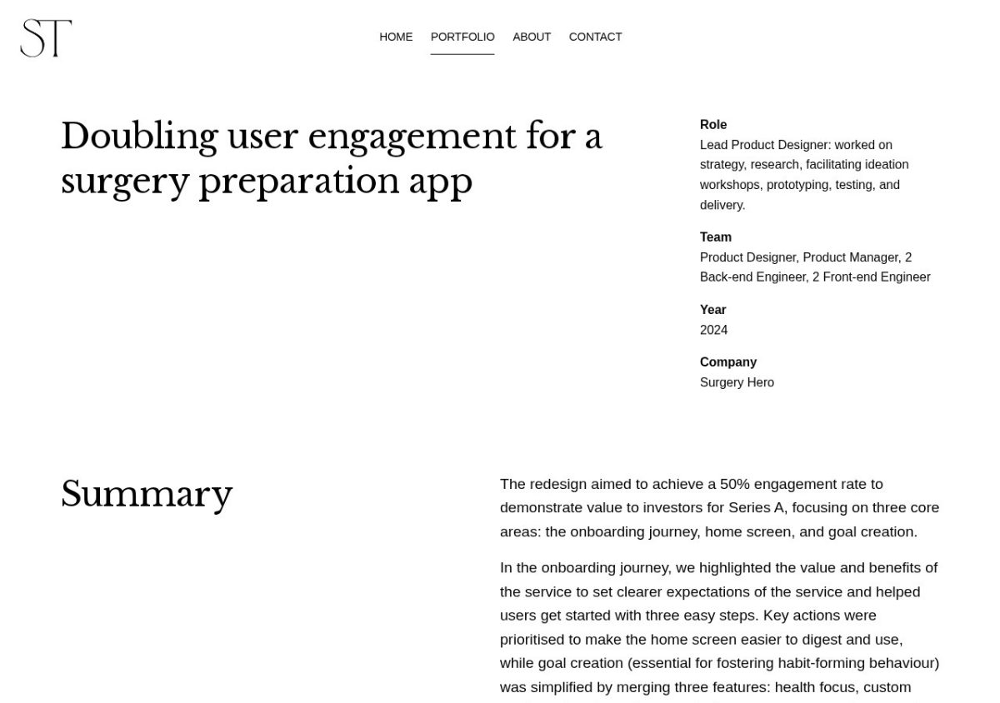
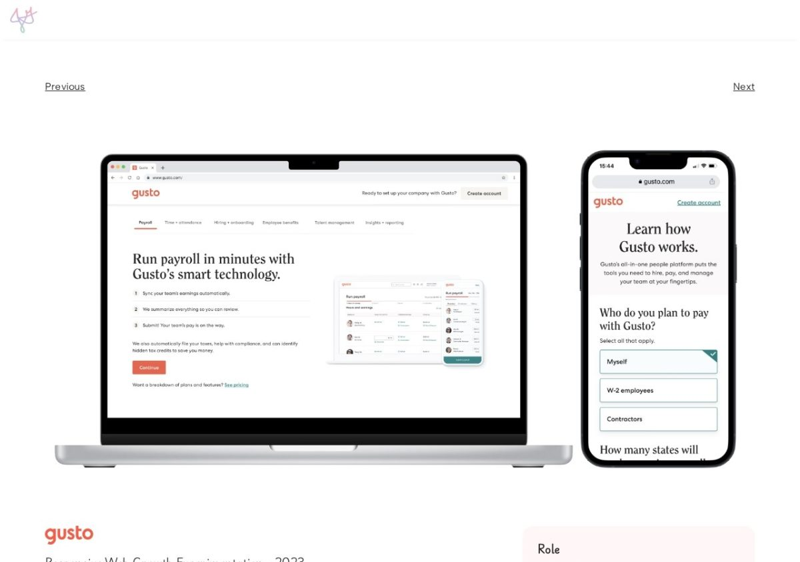
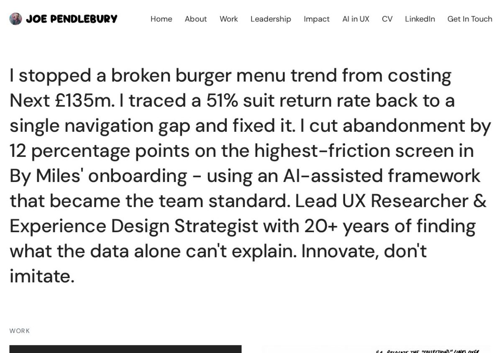
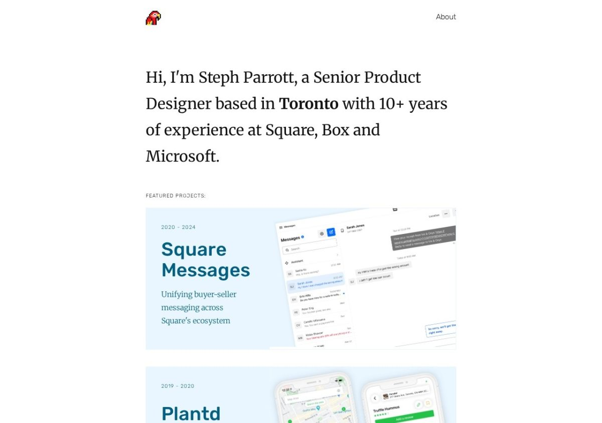
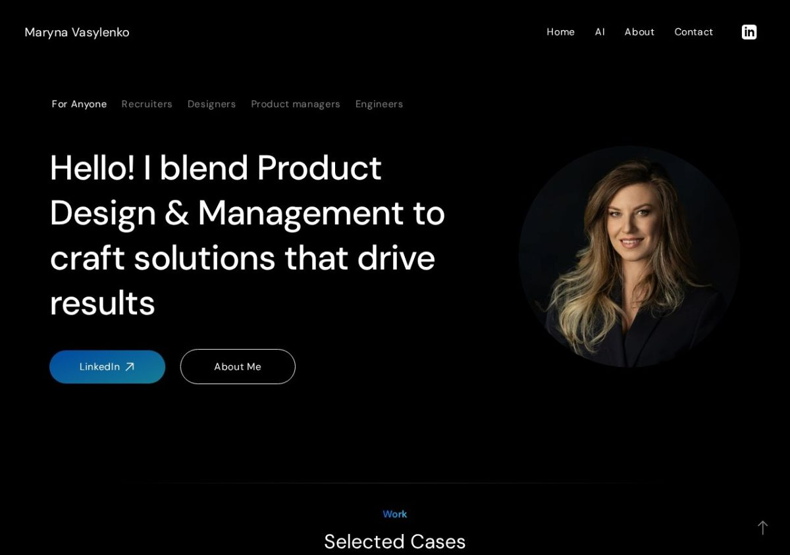

Articles / Rebuilding my portfolio
My Portfolio Was 10 Years Old. Time to Rebuild It with AI.
What 76 case studies taught me, and what AI could and couldn’t do.
My portfolio was looking old. No one needed to say it. After a half-a-dozen design interviews, I could tell it wasn't working.
So we rebuild!
Old Link: danpitrowiski.github.io/index-old.html
New Link: danpitrowiski.github.io


We start where any good project starts, with research.
Research

The research began with Product Design Portfolios. A curated collection of designers’ portfolios with many that are just visually stunning. All excellently put together.
From that website, I made a list of every designer with their portfolio link. In total now I had 76 case studies by 39 designers to compare.
I asked AI to analyze each site for (1) Common Homepage Sections (2) Common Case Study Sections (3) Word Count. And gather all that data into a spreadsheet.
See the full research spreadsheet.
What's in a Case Study?
Four sections show up in nearly every case study, I'm calling these the MUST.



MUST-INCLUDE: Overview, Role, The Problem, and the Final Solution / Outcome.
STRONG-CHOICES: Impact, Research, Ideation / explorations, Timeline, Insights / Personas, Key decisions / trade-offs, Reflection / Learnings, Testing / iteration, and Team / Collaborators.
DEPENDS: Goals, Link to next case study, Constraints, Testimonials / Quotes, “How might we” question, FAQ, AND Press / Awards
| Case study section | Count | Share |
|---|---|---|
| Final solution | 66 | 87% |
| Role | 63 | 83% |
| Overview / TL;DR | 61 | 80% |
| Problem | 59 | 78% |
| Impact / results | 51 | 67% |
| Research | 48 | 63% |
| Ideation / explorations | 44 | 58% |
| Timeline | 41 | 54% |
| Insights / personas | 41 | 54% |
| Key decisions / trade-offs | 41 | 54% |
| Reflection / learnings | 40 | 53% |
| Testing / iteration | 39 | 51% |
| Team / collaborators | 32 | 42% |
| Goals | 26 | 34% |
| Link to next case study | 26 | 34% |
| Constraints | 24 | 32% |
| Testimonials / quotes | 18 | 24% |
| “How might we” question | 16 | 21% |
| FAQ | 4 | 5% |
| Press / awards | 3 | 4% |
What's on a Homepage?
The same sections can add up to very different first impressions:



Homepages are simpler. Every one has a hero line, and nearly all list their case studies and give you a way to get in touch. About 7 in 10 keep About on its own page. Fewer than half link a resume, and only about 1 in 4 show testimonials.
MUST-INCLUDE: Hero One-liner, Contact, About Me (somewhere), and Case Study Link.
| Homepage section | Count | Share |
|---|---|---|
| Hero / one-line positioning | 44 | 100% |
| Contact / call to action | 40 | 91% |
| Case study list | 38 | 86% |
| Separate About page | 31 | 70% |
| Resume link | 21 | 48% |
| About (on the homepage) | 20 | 45% |
| Current role or company | 14 | 32% |
| Testimonials | 11 | 25% |
| Articles, writing, podcasts | 10 | 23% |
| Client logos | 9 | 20% |
| Side projects / experiments | 9 | 20% |
| Services / mentoring | 9 | 20% |
| Skills, strengths, tools | 7 | 16% |
| Principles / approach | 6 | 14% |
| Labels on projects (type, year, tags) | 5 | 11% |
| Design process | 3 | 7% |
| Awards, press, speaking | 3 | 7% |
| Career history | 2 | 5% |
How long are they? (word count)
A case study is about a five-minute read. A homepage is usually under a minute. My first draft of my new homepage was more than three times as long.
After this research, I cut my homepage from 782 to 593 words.
Currently my Case Studies are a tad long to be frank. Wootric CXI is 1,670, Press Ganey is about 1,200, and Enthuse is about 2,000 words long.
Qualitative: What Made Great Case Studies? (in my opinion)
- Lead with the result. The most polished case studies lead with the outcome: £135m saved, doubling engagement, +15% conversion, etc.
- Key decisions. Over half describe a hard decision or trade-off. The strongest put it in the title.
- Show the work. Where you could see the process in action I thought led to the strongest case studies. Especially where someone was lucky enough to take a photo.
Where I started
- Explorations. I started by asking AI to start iterating on examples of my website in different styles. I gave it access to my local repo, and went to work. The design I decided on was similar to Wikipedia. Leaning on a profile that could be easy to scan and informationally dense.
- Gather the assets. It was important for me to create documents where I could layout everything I had in order to start building.
- Create now, edit later. Editing in the moment is incredibly difficult. Having written 3 yet to be published books, I know. It's easier to finish, and edit down from there.
- Building the System. Separate stylesheet for homepage and case-studies so AI didn't change too much at once. Archiving old HTML/CSS to keep the originals.
Using AI to Speed Up the Process
Scanning Emails from 2013
My Enthuse work was over a decade old, and my original Case Study has since been deleted by Squarespace (Thanks Squarespace). So I needed to put it all back together.
So I put all my data into one folder and asked AI for help. Here’s what I gave it:
- Old work emails.
- Design Google Docs.
- Sketch Designs.
- Product Screenshots.
- Old Resumes.
Grabbing Customer Quotes
I had AI scan the web for customer quotes.
- Wootric It found G2 Crowd quotes.
- Enthuse Articles by the partnership universities.
- Press Ganey/InMoment/Qualtrics Case Studies from my customers.
Where I Put In the Most Work
- Massive Editing. AI was good for laying out a structure for me to working with, but I had to edit everything after.
- Telling a Story. For a case study to read and show well, I think it's all about the story. That's where reading and reading every case study became so important.
- Images. Putting together the best assets is a job on it's own that AI can sometimes help with. Like a lot of my Enthuse Case Study has images cropped by AI to show better.
- Data Gathering. Getting all the data in one place took forever. Even if AI helped slog through some old emails, it was a lot to export and gather.
What went wrong
Plenty went wrong. And I think AI is best used when you already know the subject matter really well. In this case, I was the subject matter.
- Hallucinations: AI would often fill in details or assume things about myself or the role that didn't exist. While the content is great as an outline, it's worth deleting whole paragraphs and just rewriting it yourself.
- Lost work: More than a few times, I would edit a file and then ask AI to change something. When I saved my changes, it over-wrote everything. Be sure to git commit after every important update.
- Code Yourself: This portfolio was originally 100% coded by myself. Now it's a mix. But when it comes to the small tweaks, it's 1000% more efficient to make the changes yourself than ask the AI.
What I'd tell other designers
My portfolio isn't finished. I don’t think any portfolio ever is. But here are my takeaways from working with AI to rebuild my portfolio.
- Treat your portfolio like a product. Research it, ship it, measure it, and keep going.
- Do the research before the prompt. A strong reference gets you further than a blank page.
- Review Every Result: Ask it to show you the changes before it does anything. After a change, ask to see the before and after. Make sure it's what you want.
- More is Better: Specifically working with AI, it's better to give it more information than less especially with Case Studies.
- Use it to dig: Save your time scouring the internet and let it look for customer quotes.
References
- Product Design Portfolios. Curated list of designer portfolios.